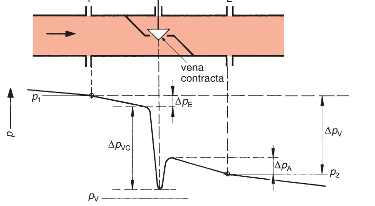
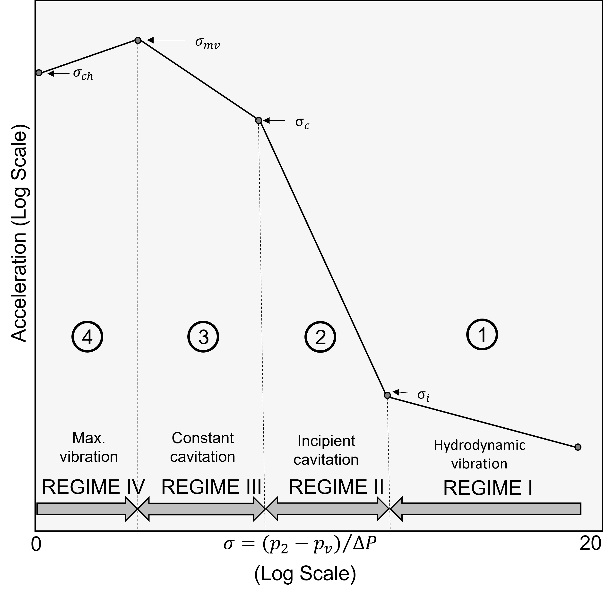

Quantifying the Cavitation Potential of the control valve
Quantifying the Cavitation Potential of the valve
Cavitation
In its simplest terms, cavitation is the two-stage vaporization process simply boiling a liquid, also known as flashing. In a control valve, this vaporization occurs because the pressure of the liquid is reduced, instead of the more common occurrence where the temperature is increased. As fluid passes through a valve just downstream of the orifice area, there is an increase in velocity or kind of energy accompanied by a substantial decrease in pressure or potential energy. This occurs in a place called the vena contracta. If the pressure in this area falls below the vapor pressure of the following fluid, vaporization (boiling) occurs. Vapor bubbles then continue downstream, where the velocity of the liquid begins to slow, and the pressure in the fluid recovers. The vapor bubbles then collapse or implode. Cavitation in control valves occurs only with liquid flows. [ISA S75.05 Control Valve Terminology].

Its effect on the system’s cavitation varies with valve type, size, operating pressure, and installation details. To include cavitation in the design process is necessary to determine if cavitation will evaluate its intensity, characterize the flow conditions, and estimate its effect on the system and environment. Possible consequences include noise, vibration, erosion damage, and a decrease in performance.
In the case of control valves, it is conventional to describe the application in terms of a single parameter and then compare this parameter to different limits of operation for a given control element.
Characterizing the flow conditions corresponding to a selected cavitation level requires defining a cavitation index derived from dimensional analysis. The process involves determining the fluid properties, geometric characteristics, and parameters influencing the cavitation process. The main variables affecting the cavitation process are:
- the geometric configuration of the device,
- absolute pressure in the cavitating region,
- the critical pressure, generally assumed to be the liquid-vapor pressure and velocity or pressure drop
The cavitation index sigma \((\sigma)\) is a form of another dimensionless parameter. Sigma \((\sigma)\) is constant for either SI or US Customary units as long as the same pressure units are used throughout the equations for the parameter. This index \((\sigma)\) is the ratio of fluid forces trying to prevent cavitation (the system or service pressure) to the forces trying to cause cavitation (the pressure drop). The smaller the value of the cavitation index for a flow system, the more likely or, the more severe cavitation will be.
The force suppressing cavitation is proportional to the magnitude of the average pressure relative to absolute vapor pressure i.e. \((P-P_r)\). The force causing cavitation is proportional to the velocity head \(V^2/2g\) or to the pressure drop across the valve \(\Delta P\). The resulting cavitation parameter sigma can be expressed as [@tullis1993]:
\[ \sigma_1 = \frac{P_1-P_v}{\Delta P_{net}} \]
in which:
- \(P_1\) is the absolute pressure just upstream from the valve \((P_l = P_u + P_b)\),
- \(P_u\) is the gauge pressure just upstream from the valve,
- \(P_b\) is the atmospheric or barometric pressure,
- \(P_v\) is the absolute vapor pressure of water and
- \(\Delta P_{net}\) the net pressure drop across the valve \((P_1 - P_2)\).
- The minimum value of sigma (\(\sigma_1\)) is \(1.0\) since the maximum \(\Delta P_{net}\) across the valve is \((P_1 - P_v)\).
For cavitation caused by surface roughness, an isolated roughness, an offset in the boundary, or by any device for which it is not possible or convenient to evaluate a pressure differential, for the calculation of the cavitation can be used the velocity head in place of \(\Delta{P}\) in the Equation of \(\sigma\). The resulting Equation is:
\[ \sigma_{1_{roug}} = \frac{P_1-P_v}{(V^2/2g)} \]
The cavitation parameter can be defined in various ways for valves and other devices that create a pressure drop. The reference pressure in the numerator of the sigma equation \((\sigma_1)\) can be the upstream or downstream pressure. Both have been used, and there are valid reasons to support either option. So using the downstream pressure \(P_2\), the equation becomes:
\[ \sigma_{2} = \frac{P_2-P_v}{\Delta P_{net}} \]
In which \(P_2\) is the absolute downstream pressure (\(P_2 = P_d + P_b\)), where \(P_d = P_u - \Delta P_{net}\) and \(P_b\) is the barometric pressure.
This form is preferred because the downstream pressure is the pressure closer to the zone where the cavitation occurs. Therefore, the downstream pressure more directly influences the cavitation. However, it is more convenient to use the upstream pressure for most applications, and the two sigma values differ by a constant value of \(1.0\). The following simple equation directly relates to the equation:
\[ \sigma_2 = \sigma_{1} + 1 \]
Some publications use the reciprocal of Equation for \(\sigma_1\) and define the cavitation index as \(K_c\) instead of \(\sigma_1\). The equation that defines \(K_c\) is:
\[ K_c = \frac{1}{\sigma_{1}} = \frac{\Delta P_{net}}{(P_1-P_v)} \]
Using use the reciprocal of Equation for \(\sigma_1\). Some publications, authors, and valve manufacturers also add a safety factor to the cavitation parameter \(\sigma_1\) to ensure possible cavitation caused by any device for which it is not possible or convenient to assess a pressure differential near the control valve, so:
\[ \frac{1}{\sigma_{3}} = \frac{1}{\sigma_{1}} + \frac{1}{\sigma_{1_{roug}}}= \frac{\Delta P_{net}}{(P_1-P_v)} + \frac{(V^2/2g)}{(P_1-P_v)} \] \[ \frac{1}{\sigma_{3}} = \frac{\Delta P_{net} + (V^2/2g)}{(P_1-P_v)} \]
Then:
\[ \sigma_{3} = \frac{(P_1-P_v)}{\Delta P_{net} + (V^2/2g)} \]
In the same way that cavitation \(\sigma\), as defined above in the function of \(P_1\) or \(P_2\), can be expressed now it’s using the downstream pressure \(P_2\); the equation becomes:
\[ \sigma_{4} = \frac{(P_2-P_v)}{\Delta P_{net} + (V^2/2g)} \]
Which of the functions the hydraulic designer should use is at his discretion.
Evaluating the Cavitation Limits of the valve
Cavitation causes noise, pressure fluctuations, vibrations, and erosion damage and can reduce the valve’s capacity in advanced stages. The acceptable cavitation level for a valve in a given system varies with valve type, valve function, details of the piping layout, and operation duration.It is necessary to identify and provide experimental data for several cavitation intensity levels to have adequate information for analysis and design. There are defined six different cavitation design limits. The methods used to determine each limit experimentally are defined, and suggestions when each limit might be appropriate. These limits are [@tullis1993 and ISA-RP75.23-1995]:
Incipient cavitation \(\sigma_{i}\)
- Onset of cavitation
- Detect using high-frequency vibration measurement
- Very local phenomenon
- Transient: random “ticks” sound
- Low-level cavitation: usually not damaging
- Occurs before the loss of flow capacity
Critical (or constant) cavitation \(\sigma_{c}\)
- More regular cavitation events
- Lower frequency sound and vibration sensed: “rumbling” sound
- Some surface damage may occur: dependent upon valve and trim styles and materials.
Maximum noise and vibration level \(\sigma_{mv}\)
- Highest vibration amplitude: sounds like “marbles” or “gravel.”
- Vigorous, large-scale cavitation
- Very high damage potential
Choked flow \(\sigma_{ch}\)
- Choking” cavitation is a most severe level of cavitation.
- The maximum noise, vibration, and material damage levels occur at or just before this condition.
- Under “fully choked” flow conditions, an additional decrease in the downstream pressure will not increase the flow rate through the valve at a given inlet pressure. In other words, it is a limiting flow condition in which vapor formation is enough to limit the valve’s flow rate to some maximum value.
- The choking “process” occurs over a range of pressure drops due to the compressibility changes accompanying vapor formation.

Cavitation parameter plot: using an accelerometer values.
Incipient damage \(\sigma_{id}\): A cavitation level sufficient to begin minor, observable indications of pitting damage.
Manufacturer’s recommended cavitation limit \(\sigma_{mr}\): is an operational limit supplied by the manufacturer for a given valve type, size, opening, and reference upstream pressure. Application of the limit may require scale effect and influence factors if the service conditions and valve size are different than the reference pressure and altitude.
References
- Tullis, J. P. Cavitation Guide for Control Valves. NUREG/CR-6031, Nuclear Regulatory Commission, Washington, DC (United States). Div. of Engineering; Tullis Engineering Consultants, Logan, UT (United States), 1 Apr. 1993, https://doi.org/10.2172/10155405.
- ISA-RP75.23-1995 Considerations for Evaluating Control Valve Cavitation
- ANSI/ISA, editor. ANSI/ISA-75.01.01-2007, Flow Equations for Sizing Control Valves. ISA, 2007.
- ANSI/ISA-75.01-1985 (R1995), Flow Equations for Sizing Control Valves. 1985.
- ANSI/ISA-RP75.21, Process Data Presentation for Control Valves. Instrument Society of America, 1996.
- ANSI/ISA–RP75.23–1995, Considerations for Evaluating Control Valve Cavitation. Instrument Society of America, 1995.
- ANSI/ISA-S75.02, Control Valve Capacity Test Procedures. Instrument Society of America, 1996.
- ANSI/ISA-S75.05, Control Valve Terminology. 1983.
- International Society of Automation, and American National Standards Institute. ANSI/ISA–75.02.01–2008 (IEC 60534-2-3 Mod) Control Valve Capacity Test Procedures. 2008.